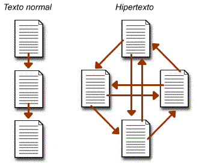
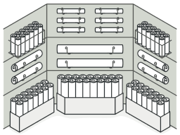

Se trata de crear experiencias de usuario que mejoren la forma en que las personas trabajan, se comunican e interactúan. El objetivo es diseñar productos, entornos, sistemas y servicios digitales interactivos.
Equipos multidisciplinarios que incluyen ingenieros, diseñadores, programadores, psicólogos, antropólogos, expertos en marketing, entre otros.
Representan pasos o procesos de un sistema, incluyendo pantallas, acciones y relaciones entre elementos.
Guías visuales que representan la estructura de una aplicación o sitio web.


Se utilizan para estandarizar y resolver problemas comunes en interfaces de usuario.